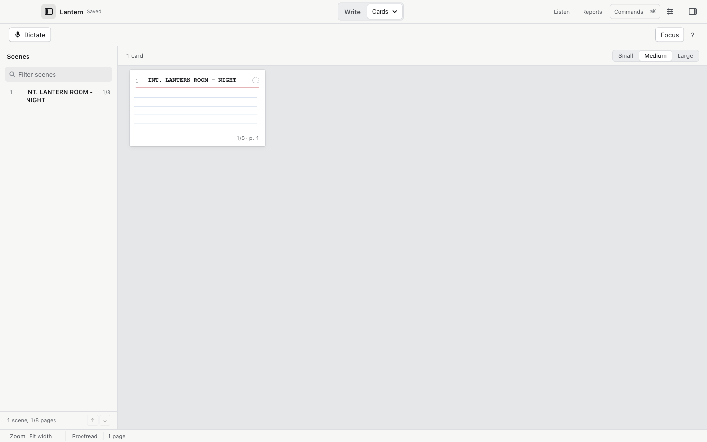
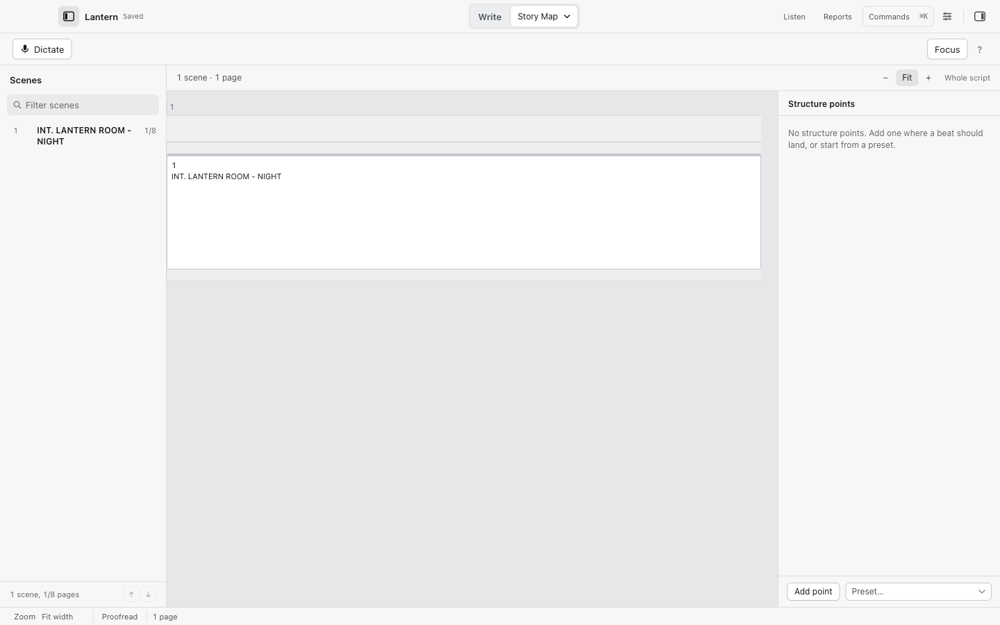

Scenes, the navigator, and views
The left sidebar is the scene navigator. The Plan workspaces give you five more ways to see the same script.
The scene navigator

View > Show Scenes toggles it; View > Toggle Left Sidebar (⌘⌥S) hides and shows the whole sidebar.
The list shows every scene with its number, its length in page eighths, and totals ("6 scenes, 2 1/8 pages"). Selecting a scene jumps the editor to it.
- Reorder with the
↑and↓buttons, or drag. Keyboard-only reordering works too. - View > Previous Scene (
⌘⌥Up) and Next Scene (⌘⌥Down) walk scene to scene. - Edit > Select Current Scene (
⌘⇧A) selects the whole current scene. - Script > Go to Scene… (
⌘⇧J) opens the same list as a picker. - View > Go to Page… (
⌘⌥G) jumps to a page; locked page numbers such as 12A work. - View > Back to Previous Location (
⌘⌥Left) and Forward to Next Location (⌘⌥Right) retrace your cursor's path during the session, skipping deleted positions.
Scene operations
Script > Duplicate / Move / Split / Merge Scene… opens a preview before it touches anything:
- Choose the source scene.
- Choose the operation: duplicate after this scene, move before another scene, split at the caret, or merge into the preceding scene.
- Choose whether attached project notes and alternatives come along (they get fresh identities).
- Choose Apply reviewed scene operation. Each operation is one Undo.
Numbered or page-locked drafts are refused. Split needs the caret placed in the script first.
The five views
| View | Shortcut | What it shows |
|---|---|---|
| Script | ⌃⌘1 |
The page. |
| Cards | ⌃⌘2 |
One card per scene with cast and page position, in small, medium or large. |
| Outline | ⌃⌘3 |
Scene headings and lengths, collapsible sections. |
| Story Map | ⌃⌘4 |
Scenes positioned by structure points you place. |
| Beats | ⌃⌘5 |
Ideas parked before you promote them into scenes. |
| Canvas | ⌃⌘6 |
The beat canvas: arrange beats freely or link them to scenes. |
Story Map and structure points

A structure point marks where a beat should land, for example "end of act one". Add one with Add point, or start from a preset (Three-act, Beat sheet). Scenes align themselves to the points and the map shows the pages around each.
Fountain files cannot store structure points. Cold Open says so in the view; use Save As to keep them in a .screenplay file.
Beats
Beats live in the Beats view and the Canvas. Tools > New Beat… adds an idea without touching the screenplay. Adding a beat never inserts a hidden scene; you move text into a scene yourself when you are ready.
On the canvas, drag cards anywhere, link them to existing scenes, or use the accessible list. Zoom sits at 50 to 125 percent. Moving a card never moves screenplay text.